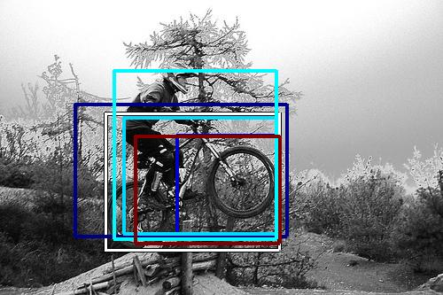

0.462396

0.549076

0.571025

0.593184

0.613227

0.626173

0.702362

0.730434

0.744165

0.760393
| Target image | 0.462396 | 0.549076 | 0.571025 | 0.593184 | 0.613227 | 0.626173 | 0.702362 | 0.730434 | 0.744165 | 0.760393 |
Target image |  2177.145996 |  1574.644653 |  1547.200317 |  1540.230225 |  1425.146240 |  1393.977295 |  1371.916748 |  1333.594604 |  1315.370483 |  1278.632446 |
Target image |  4794.536133 |  4761.468750 |  4008.592285 |  3865.995605 |  3740.462646 |  3402.898193 |  2902.349121 |  2730.671875 |  2414.108887 |  2295.336914 |
Target image |  5654.279297 |  5297.600098 |  4796.589355 |  4448.303711 |  3516.144043 |  3237.843750 |  2972.405029 |  2936.585938 |  2374.384033 |  2367.244629 |
Target image |  9088.998047 |  6796.122070 |  5568.535156 |  5239.229492 |  3607.958984 |  3152.773926 |  3117.935303 |  2311.675781 |  2114.004395 |  2094.066895 |